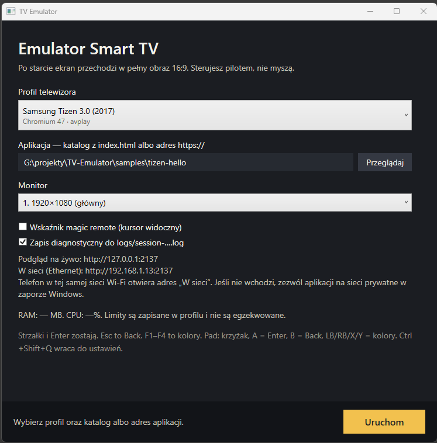
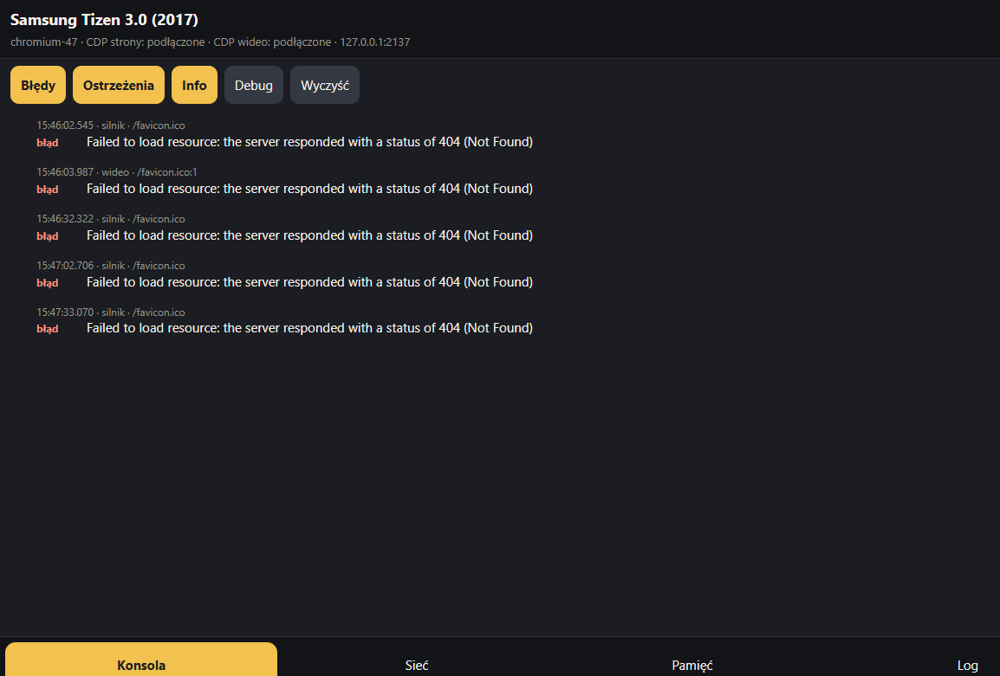
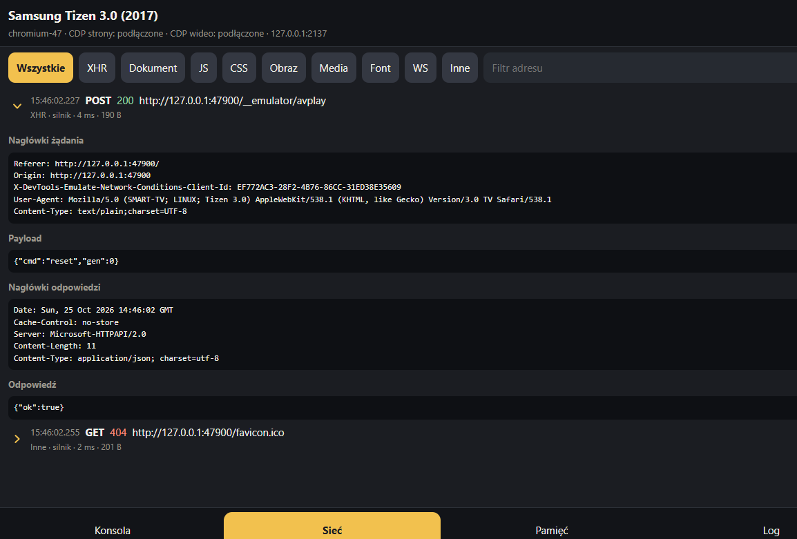
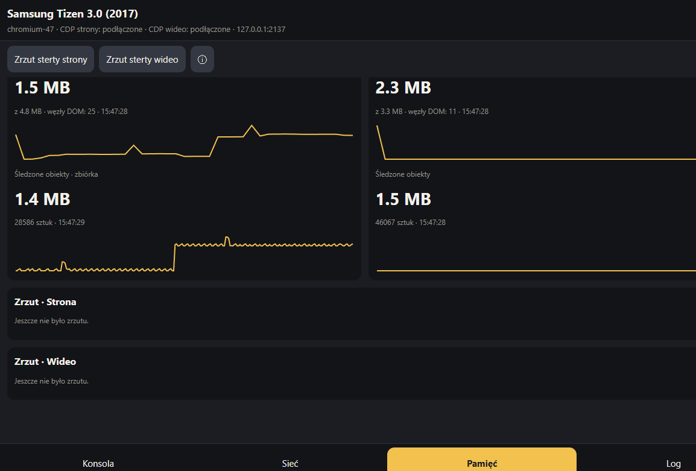

What it emulates
Samsung and LG still lead the list. Beyond them: Hisense VIDAA, Vizio SmartCast, Philips Saphi and Titan OS, HbbTV, Panasonic my Home Screen, Panasonic Fire TV, and Sony BRAVIA / Vewd. Each profile pins an engine close to that set’s year, then chooses how video is played.
| Profile | Chromium | Picture |
|---|---|---|
| Samsung Tizen 3.0 (2017) | 47 | avplay |
| Samsung Tizen 4.0 (2018) | 56 | avplay |
| Samsung Tizen 5.0 (2019) | 63 | avplay |
| Samsung Tizen 6.5 (2022) | 85 | avplay |
| Samsung Tizen 9.0 (2025) | Chrome 120 | avplay |
| LG webOS TV 4.x (2018–2019) | 53 | edge |
| Hisense VIDAA U2-class | 74 | edge |
| Hisense VIDAA U6 | 88 | edge |
| Hisense VIDAA 9 (2025) | 111 | edge |
| Vizio SmartCast | 47, 56, 63 | edge |
| Philips NetTV / early Saphi | 49 | edge |
| Philips Saphi 2020–2022 | 84 | edge |
| Titan OS | Chrome 122 | edge |
| HbbTV 1.5 | 53 | edge |
| Panasonic my Home Screen (2016) | Firefox 44 | edge |
| Panasonic Fire TV (2025) | Chrome 122 | edge |
| Sony BRAVIA / Vewd | 47 | edge |
How the picture is made
The page and the video do not share a browser. Old TV Chromium cannot play the streams these apps expect.
The host is a Windows app. It serves your folder, or loads an http(s) address, and injects a small platform shim. That shim provides the surfaces a TV app looks for — tizen / webapis, webOS, VIDAA Hisense_Get*, VIZIO, Philips DeviceInfo, HbbTV video/broadcast, Panasonic, Sony, or a Fire TV user agent — plus the remote key codes for that set. The window is a 16:9 stage. Where the page punches a hole in a key color, the video layer shows through, the same idea as a television’s video plane under the HTML.
Tizen uses Chromium plus avplay. webapis.avplay is the native player on a Samsung TV. The pinned Chromium build has no usable H.264, AAC, or PlayReady. Calls are forwarded to a second window: WebView2, which is current Edge. Edge has the codecs and Microsoft PlayReady, so Shaka Player there can take a clear or PlayReady DASH stream. The Chromium window stays on top and owns clicks. The Edge window sits behind it and only appears through the key color.
webOS uses Chromium plus Edge. webOS 4 plays through the HTML engine and Widevine, not avplay. Chromium 53 has neither a Widevine CDM nor H.264. The page still chooses variants and pulls segments. Edge owns the real Widevine session and the decoder. The video element in the old page is only a clock. PlayReady stays on the Tizen path and is not used here. VIDAA, SmartCast, Saphi, HbbTV, Fire TV, and the Sony profile use that same Edge path. HbbTV video/broadcast is a shim object, not a tuner.
Titan and Panasonic Fire TV play through Edge. Chrome for Testing 122 has no Widevine CDM, so both open the video plane. A Fire TV page recognizes the set from an AmazonWebAppPlatform user agent, and Back is keyCode 4. Panasonic my Home Screen from 2016 runs in Firefox 44. That Firefox has no Chrome DevTools Protocol, so the live preview stays empty while the session log still works. Sony is Chromium 47 with an OMI user agent, because the Vewd TV binary is not public.
RAM and CPU numbers stored on a profile are labels only. The app does not throttle the machine to match a television.
One VOD app for every profile
samples/universal-vod is a remote-driven catalog you can open on any shipped set.
Home is a horizontal row of titles. Enter opens a detail screen; Enter again starts playback; arrows seek; the red key or Back stops. The page reads the active profile and chooses a backend: AVPlay on Tizen, Shaka Player on every other profile.
Three public DASH demos sit in the catalog. A clear stream plays on both backends. PlayReady is for the Tizen / AVPlay path. Widevine is for the Shaka / HTML video path. Titles the current set cannot decrypt stay visible but marked unavailable, so you can see which DRM belongs where.
What you get while it runs
A remote, a stage, and a live preview you can open on another device.
- Remote, not a mouse
- Arrows and Enter, Esc as Back, F1–F4 as the color keys. A gamepad maps the same way. Ctrl+Shift+Q returns to settings. An optional magic-remote cursor can be shown.
- Your app, local or remote
- Point at a folder with
index.html, or paste an http(s) URL. Samples cover hello pages, an HbbTV broadcast shim, and a full VOD catalog that picks AVPlay or Shaka from the active profile. - Live preview
- With diagnostics on, a page on port 2137 follows the session over the LAN. Console, network, memory, and the session log update while the television view stays full screen. The preview UI is in Polish.
Three views
Settings before launch, the 16:9 stage, and the live preview.


console output and exceptions from the page, with level filters.

Changelog
Plain-language notes for changes that landed after the previous entry.
- Loading changelog…